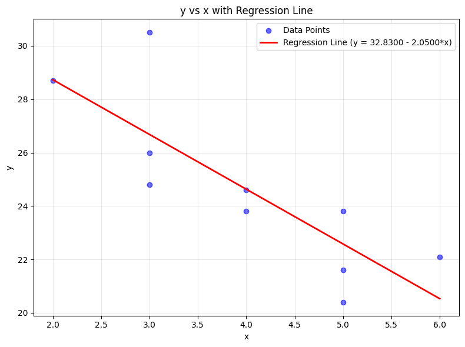

The following table is a partial ANOVA Table
| Source | Sum of Squares | df | Mean Square | F |
|---|---|---|---|---|
| Treatment | 2 | |||
| Error | 20 | |||
| Total | 500 | 11 |
Complete the table and answer the following questions. Use the significance level.
a. How many treatments are there?
b. What is the total sample size?
c. What is the critical value of ?
d. Write out the null and alternative hypotheses.
e. What is your conclusion regarding the null hypothesis?
The Completed ANOVA Table
To complete the table, we use the following relationships:
| Source | Sum of Squares | df | Mean Square | F |
|---|---|---|---|---|
| Treatment | 320 | 2 | 160 | 8.00 |
| Error | 180 | 9 | 20 | |
| Total | 500 | 11 |
a. How many treatments are there?
The degrees of freedom for treatment is , where is the number of treatments. There are 3 treatments.
b. What is the total sample size?
The total degrees of freedom is , where is the total sample size. The total sample size is 12.
c. What is the critical value of F?
Using the F-distribution table with , numerator , and denominator :
d. Write out the null and alternative hypotheses.
e. What is your conclusion regarding the null hypothesis?
We compare the calculated F-statistic to the critical value:
Since the calculated : 8.00 is greater than the critical value , we reject the null hypothesis. There is sufficient evidence at the 0.05 significance level to conclude that there is a significant difference between the treatment means.
The results of a one-way ANOVA are reported below.
| Source of Variation | SS | df | MS | F |
|---|---|---|---|---|
| Between Groups | 6.90 | 2 | 3.45 | 5.15 |
| Within Groups | 12.04 | 18 | 0.67 | |
| Total | 18.94 | 20 |
Answer the following questions.
a. How many treatments are in the study?
b. What is the total sample size?
c. What is the critical value of ? (Using )
d. Write out the null hypothesis and the alternative hypothesis.
e. What is your decision regarding the null hypothesis?
f. Can we conclude that any of the treatment means differ?
a. How many treatments are in the study?
The degrees of freedom for Between Groups is , where is the number of treatments (groups). There are 3 treatments in the study.
b. What is the total sample size?
The total degrees of freedom is , where is the total sample size. The total sample size is 21.
c. What is the critical value of ?
Using an F-distribution table with , numerator degrees of freedom () = 2, and denominator degrees of freedom () = 18:
d. Write out the null hypothesis and the alternative hypothesis.
e. What is your decision regarding the null hypothesis?
We compare the calculated F-statistic from the table to the critical value:
Since the calculated is greater than the critical value , we reject the null hypothesis.
f. Can we conclude that any of the treatment means differ?
Yes. Because we rejected the null hypothesis, there is sufficient evidence at the 0.05 significance level to conclude that there is a statistically significant difference between at least two of the treatment means.
Fuel Efficiency ANOVA Analysis
The fuel efficiencies for a sample of 27 compact, midsize, and large cars are analyzed using ANOVA to investigate whether there is a difference in the mean miles per gallon (MPG) for the three car sizes.
Significance Level:
Summary Statistics
| Group | Sample Size | Sum | Average | Variance |
|---|---|---|---|---|
| Compact | 12 | 268.3 | 22.35833 | 9.388106 |
| Midsize | 9 | 172.4 | 19.15556 | 7.315278 |
| Large | 6 | 100.5 | 16.75 | 7.303 |
ANOVA Table
| Source of Variation | SS | df | MS | F | p-value |
|---|---|---|---|---|---|
| Between Groups | 136.4803 | 2 | 68.24014 | 8.258752 | 0.001866 |
| Within Groups | 198.3064 | 24 | 8.262766 | ||
| Total | 334.7867 | 26 |
A. State the null hypothesis and the alternative hypothesis.
B. What is the value of the test statistic ?
From the ANOVA table provided:
C. What is the -value?
From the ANOVA table provided:
D. State the decision rule at the level.
The decision rule for a -value approach is:
In this case: Reject if .
(Alternatively, using the critical value approach: For at , the critical is approximately . We reject if ).
E. What is your conclusion regarding the mean miles per gallon for the three car sizes?
Since the is less than the significance level , we reject the null hypothesis.
Thus, there is sufficient evidence at the 0.01 significance level to conclude that there is a statistically significant difference in the mean fuel efficiency (miles per gallon) between compact, midsize, and large cars.
The Mozart effect refers to a boost of average performance on tests for elementary school students if the students listen to Mozart's chamber music for a period of time immediately before the test. Many educators believe that such an effect is not necessarily due to Mozart's music per se but rather to a relaxation period before the test.
To support this belief, an elementary school teacher conducted an experiment by dividing her third-grade class of 15 students into three groups of 5 students each:
The test scores of the 15 students are given below:
| Group 1 | Group 2 | Group 3 |
|---|---|---|
| 79 | 82 | 80 |
| 81 | 84 | 81 |
| 80 | 86 | 71 |
| 89 | 91 | 90 |
| 86 | 82 | 86 |
Using the one-way ANOVA -test at the level of significance, answer the following questions:
a. How many treatments are in the study?
b. What is the total sample size?
c. What is the critical value of ?
d. Write out the null hypothesis and the alternative hypothesis.
e. What is your decision regarding the null hypothesis?
f. Does the data provide sufficient evidence to conclude that any of the three relaxation methods performs better than the others?
Completed ANOVA Table
First, we calculate the necessary sums and means:
Calculations:
| Source of Variation | Sum of Squares | df | Mean Square | F |
|---|---|---|---|---|
| Between Groups | 29.20 | 2 | 14.60 | 0.523 |
| Within Groups | 335.20 | 12 | 27.93 | |
| Total | 364.40 | 14 |
Answers to Questions
a. How many treatments are in the study?
There are 3 treatments (Group 1, Group 2, and Group 3).
b. What is the total sample size?
There are 5 students in each of the 3 groups, so .
c. What is the critical value of ?
Using the F-distribution table with , numerator , and denominator :
d. Write out the null hypothesis and the alternative hypothesis.
e. What is your decision regarding the null hypothesis? Compare the calculated to the critical value:
Since the calculated is less than the critical value , we fail to reject the null hypothesis.
f. Does the data provide sufficient evidence to conclude that any of the three relaxation methods performs better than the others?
No. At the significance level, there is not enough evidence to conclude that there is a significant difference in performance between the relaxation methods.
Answer the following questions regarding linear regression assumptions and exploratory data analysis:
5.1. How can a data professional determine whether the linearity assumption is met in a linear regression model?
5.2. When and how can a data professional check the normality assumption in a regression model?
5.3. A data professional uses a scatterplot to plot residuals and predicted values from a regression model to check for homoscedasticity and finds that this assumption is met. What shape do the points in the scatterplot appear as?
5.4. What is the purpose of using a scatterplot matrix in exploratory data analysis?
5.1. How can a data professional determine whether the linearity assumption is met in a linear regression model?
A data professional can determine linearity by creating a Residuals vs. Fitted plot (a scatterplot with residuals on the y-axis and predicted/fitted values on the x-axis). If the points are randomly scattered around the horizontal zero line without forming any clear curve or systematic pattern, the linearity assumption is met.
5.2. When and how can a data professional check the normality assumption in a regression model?
The normality assumption is checked after fitting the model by examining the distribution of the residuals (not the raw data). It can be checked using:
Normal Q-Q Plot: If the points lie approximately along a straight diagonal line, the assumption is met.
Histogram of Residuals: To visually inspect for a bell-shaped (normal) curve.
Statistical Tests: Such as the Shapiro-Wilk test or the Kolmogorov-Smirnov test.
5.3. A data professional uses a scatterplot to plot residuals and predicted values from a regression model to check for homoscedasticity and finds that this assumption is met. What shape do the points in the scatterplot appear as?
When the homoscedasticity assumption is met, the points appear as a random, uniform cloud or a constant-width rectangular band. There should be no "fan" or "funnel" shape, meaning the spread of the residuals remains consistent across all predicted values.
5.4. What is the purpose of using a scatterplot matrix in exploratory data analysis?
The purpose of a scatterplot matrix is to visualize the pairwise relationships between multiple numerical variables in a dataset at once. It allows the professional to quickly identify correlations, potential linear or non-linear patterns, and outliers across all variable combinations in a single view.
The table shows the age in years and the retail value in thousands of dollars of a random sample of ten automobiles of the same make and model.
| x | 2 | 3 | 3 | 3 | 4 | 4 | 5 | 5 | 5 | 6 |
|---|---|---|---|---|---|---|---|---|---|---|
| y | 28.7 | 24.8 | 26.0 | 30.5 | 23.8 | 24.6 | 23.8 | 20.4 | 21.6 | 22.1 |
6.1. Construct the scatter diagram.
6.2. Compute the linear correlation coefficient r. Interpret its value in the context of the problem.
6.3. Compute the least squares regression line. Plot it on the scatter diagram.
6.4. Interpret the meaning of the slope of the least squares regression line in the context of the problem.
6.5. Suppose a four-year-old automobile of this make and model is selected at random. Use the regression equation to predict its retail value.
6.6. Suppose a 20-year-old automobile of this make and model is selected at random. Use the regression equation to predict its retail value. Interpret the result.
6.7. Comment on the validity of using the regression equation to predict the price of a brand new automobile of this make and model.
6.1. Construct the scatter diagram.

6.2. Compute the linear correlation coefficient r. Interpret its value in the context of the problem.
First, compute the necessary sums from the data (n = 10):
Using the formula:
Interpretation: The value r ≈ −0.819 indicates a strong negative linear correlation between the age of the automobile and its retail value. This means that as the age of the automobile increases, its retail value tends to decrease significantly.
6.3. Compute the least squares regression line. Plot it on the scatter diagram.
The regression line has the form ŷ = b₁x + b₀, where:
Regression line: ŷ = −2.050x + 32.83
To plot the line, substitute two x-values, such as x = 2 and x = 6, compute the corresponding ŷ values, and draw a straight line through those two points on the scatter diagram.
6.4. Interpret the meaning of the slope of the least squares regression line in the context of the problem.
The slope b₁ ≈ −2.050 means that for each additional year of age, the predicted retail value of an automobile of this make and model decreases by approximately 2,050 in retail value per year.
6.5. Suppose a four-year-old automobile of this make and model is selected at random. Use the regression equation to predict its retail value.
Substituting x = 4 into the regression equation:
The predicted retail value of a four-year-old automobile of this make and model is approximately $24,630.
6.6. Suppose a 20-year-old automobile of this make and model is selected at random. Use the regression equation to predict its retail value. Interpret the result.
Substituting x = 20 into the regression equation:
The regression equation predicts a retail value of approximately −$8,170, which is not meaningful because a retail value cannot be negative. This result occurs because x = 20 is far outside the range of the observed data (ages 2–6), and extrapolating the linear model beyond the data range produces unreliable and nonsensical predictions.
6.7. Comment on the validity of using the regression equation to predict the price of a brand new automobile of this make and model.
A brand new automobile corresponds to x = 0, which is outside the range of the sample data (ages 2–6). Using the regression equation to predict at x = 0 is an example of extrapolation, which is generally not reliable. The linear relationship observed between ages 2 and 6 may not hold for a new vehicle. Therefore, the prediction would be of questionable validity, and the regression equation should not be used to estimate the price of a brand new automobile of this make and model.
A study by the American Realtors Association investigated the relationship between the commissions earned by sales associates last year and the number of months since the associates earned their real estate licences. Also of interest in the study is the gender of the sales associate. Below is a portion of the regression output. The dependent variable is commissions, which is reported in $000, and the independent variables are months since the license was earned and gender (female = 1 and male = 0).
Regression Analysis Output:
Regression Statistics
| Statistic | Value |
|---|---|
| Multiple R | 0.801 |
| R Square | 0.642 |
| Adjusted R Square | 0.600 |
| Standard Error | 3.219 |
| Observations | 20 |
ANOVA
| df | SS | MS | F | p-value | |
|---|---|---|---|---|---|
| Regression | 2 | 315.9291 | 157.9645 | 15.2468 | 0.0002 |
| Residual | 17 | 176.1284 | 10.36049 | ||
| Total | 19 | 492.0575 |
Coefficients
| Coefficients | Standard Error | t Stat | p-value | |
|---|---|---|---|---|
| Intercept | 15.7625 | 3.0782 | 5.121 | .0001 |
| Months | 0.4415 | 0.0839 | 5.262 | .0001 |
| Gender | 3.8598 | 1.4724 | 2.621 | .0179 |
7A. Write out the regression equation. How much commission would you expect a female agent to make who earned her license 30 months ago?
7B. Do the female agents on average make more or less than the male agents? How much more?
7C. Conduct a test of hypothesis to determine if the independent variable gender should be included in the analysis. Use the .05 significance level. What is your conclusion?
7A. Write out the regression equation. How much commission would you expect a female agent to make who earned her license 30 months ago?
Using the coefficients from the output, the regression equation is:
where ŷ is the predicted commission in $000, Months is the number of months since the license was earned, and Gender = 1 for female, 0 for male.
For a female agent (Gender = 1) who earned her license 30 months ago (Months = 30):
The expected commission for a female agent who earned her license 30 months ago is approximately $32,867.30.
7B. Do the female agents on average make more or less than the male agents? How much more?
The Gender variable is coded as female = 1 and male = 0. The coefficient for Gender is 3.8598, which is positive.
This means that, holding the number of months constant, female agents earn more than male agents on average. The difference is the Gender coefficient:
Female agents earn on average $3,859.80 more in commissions than male agents with the same number of months since licensure.
7C. Conduct a test of hypothesis to determine if the independent variable gender should be included in the analysis. Use the .05 significance level. What is your conclusion?
We test whether the Gender coefficient is significantly different from zero:
From the regression output:
| Value | |
|---|---|
| Coefficient (b) | 3.8598 |
| Standard Error | 1.4724 |
| t Stat | 2.621 |
| p-value | 0.0179 |
Decision Rule: Reject H₀ if p-value < α = 0.05.
Decision: Since p-value = 0.0179 < 0.05, we reject H₀.
Conclusion: At the .05 significance level, there is sufficient evidence that the Gender variable is a significant predictor of commissions earned. Gender should be included in the regression model.
The administrator of a new paralegal program at Seagate Technical College wants to estimate the grade point average in the new program. He thought that high school GPA, the verbal score on the Scholastic Aptitude Test (SAT), and the mathematics score on the SAT would be good predictors of paralegal GPA. The data on nine students are:
| Student | High School GPA | SAT Verbal | SAT Math | Paralegal GPA |
|---|---|---|---|---|
| 1 | 3.25 | 480 | 410 | 3.21 |
| 2 | 1.80 | 290 | 270 | 1.68 |
| 3 | 2.89 | 420 | 410 | 3.58 |
| 4 | 3.81 | 500 | 600 | 3.92 |
| 5 | 3.13 | 500 | 490 | 3.00 |
| 6 | 2.81 | 430 | 460 | 2.82 |
| 7 | 2.20 | 320 | 490 | 1.65 |
| 8 | 2.14 | 530 | 480 | 2.30 |
| 9 | 2.63 | 469 | 440 | 2.33 |
8A. Consider the following correlation matrix. Which variable has the strongest correlation with the dependent variable? Some of the correlations among the independent variables are strong. Does this appear to be a problem?
| Paralegal GPA | High School GPA | SAT Verbal | |
|---|---|---|---|
| High School GPA | 0.911 | ||
| SAT Verbal | 0.616 | 0.609 | |
| SAT Math | 0.487 | 0.636 | 0.599 |
8B. Consider the following output. Compute the coefficient of multiple determination.
8C. Conduct a global test of hypothesis from the preceding output. Does it appear that any of the regression coefficients are not equal to zero?
8D. Conduct a test of hypothesis on each independent variable. Would you consider eliminating the variables SAT Verbal and "SAT Math"? Let α = 0.05.
Regression Output (Full Model — 3 predictors):
The regression equation is:
Paralegal GPA = −0.411 + 1.20 HSGPA + 0.00163 SAT_Verbal − 0.00194 SAT_Math
| Predictor | Coef | SE Coef | T | P |
|---|---|---|---|---|
| Constant | −0.4111 | 0.7823 | −0.53 | 0.622 |
| HSGPA | 1.2014 | 0.2955 | 4.07 | 0.010 |
| SAT_Verbal | 0.001629 | 0.002147 | 0.76 | 0.482 |
| SAT_Math | −0.001939 | 0.002074 | −0.94 | 0.393 |
| Source | DF | SS | MS | F | P |
|---|---|---|---|---|---|
| Regression | 3 | 4.3595 | 1.4532 | 10.33 | 0.014 |
| Residual Error | 5 | 0.7036 | 0.1407 | ||
| Total | 8 | 5.0631 |
| Source | DF | Seq SS |
|---|---|---|
| HSGPA | 1 | 4.2061 |
| SAT_Verbal | 1 | 0.0303 |
| SAT_Math | 1 | 0.1231 |
8E. The analysis has been rerun without SAT Verbal and "SAT Math". See the following output. Compute the coefficient of determination. How much has R² changed from the previous analysis?
Regression Output (Reduced Model — HSGPA only):
The regression equation is:
Paralegal GPA = −0.454 + 1.16 HSGPA
| Predictor | Coef | SE Coef | T | P |
|---|---|---|---|---|
| Constant | −0.4542 | 0.5542 | −0.82 | 0.439 |
| HSGPA | 1.1589 | 0.1977 | 5.86 | 0.001 |
| Source | DF | SS | MS | F | P |
|---|---|---|---|---|---|
| Regression | 1 | 4.2061 | 4.2061 | 34.35 | 0.001 |
| Residual Error | 7 | 0.8570 | 0.1224 | ||
| Total | 8 | 5.0631 |
8F. Following is a histogram of the residuals. Does the normality assumption for the residuals seem reasonable?
8G. Following is a plot of the residuals and the ŷ values. Do you see any violation of the assumptions?
8A. Which variable has the strongest correlation with the dependent variable? Does multicollinearity appear to be a problem?
From the correlation matrix, High School GPA has the strongest correlation with Paralegal GPA, with r = 0.911 — a very strong positive linear relationship. SAT Verbal (r = 0.616) and SAT Math (r = 0.487) have moderate correlations with the dependent variable.
Regarding multicollinearity: the correlations among the independent variables are moderately strong (HSGPA–SAT Math: 0.636; HSGPA–SAT Verbal: 0.609; SAT Verbal–SAT Math: 0.599). This does suggest a potential multicollinearity problem, as the predictors are correlated with each other. This can inflate standard errors and make it difficult to isolate the individual effect of each variable, which may explain why SAT Verbal and SAT Math are not statistically significant in the full model despite having some correlation with the outcome.
8B. Compute the coefficient of multiple determination.
The coefficient of multiple determination R² is computed from the ANOVA output of the full model:
This means that approximately 86.1% of the variation in Paralegal GPA is explained by the three independent variables (High School GPA, SAT Verbal, and SAT Math) together.
8C. Conduct a global test of hypothesis. Does it appear that any of the regression coefficients are not equal to zero?
From the ANOVA output of the full model:
| Value | |
|---|---|
| F statistic | 10.33 |
| p-value | 0.014 |
| α | 0.05 |
Decision: Since p-value = 0.014 < α = 0.05, we reject H₀.
Conclusion: At the .05 significance level, there is sufficient evidence to conclude that at least one of the regression coefficients is not equal to zero. The overall regression model is statistically significant.
8D. Conduct a test of hypothesis on each independent variable. Would you consider eliminating SAT Verbal and SAT Math? Let α = 0.05.
Testing each predictor individually (H₀: βᵢ = 0 vs. H₁: βᵢ ≠ 0):
| Predictor | Coefficient | t Stat | p-value | Decision (α = 0.05) |
|---|---|---|---|---|
| HSGPA | 1.2014 | 4.07 | 0.010 | Reject H₀ — significant |
| SAT_Verbal | 0.001629 | 0.76 | 0.482 | Fail to reject H₀ — not significant |
| SAT_Math | −0.001939 | −0.94 | 0.393 | Fail to reject H₀ — not significant |
Since both SAT Verbal (p = 0.482) and SAT Math (p = 0.393) have p-values well above 0.05, we would consider eliminating both variables from the model. Only High School GPA is a statistically significant predictor.
8E. Compute the coefficient of determination for the reduced model. How much has R² changed?
From the reduced model (HSGPA only):
Comparing the two models:
| Model | R² |
|---|---|
| Full model (HSGPA + SAT Verbal + SAT Math) | 0.861 |
| Reduced model (HSGPA only) | 0.831 |
| Change in R² | −0.030 |
R² decreased by only 0.030 (3.0 percentage points) after removing both SAT variables. This is a very small drop, which confirms that SAT Verbal and SAT Math contributed very little additional explanatory power beyond what High School GPA already provides. The simpler reduced model is therefore preferred.
8F. Does the normality assumption for the residuals seem reasonable?
The histogram of residuals from the reduced model shows that the majority of residuals are clustered near zero, with a roughly symmetric, bell-shaped appearance. While the sample size is small (n = 9), there is no strong evidence of severe skewness or outliers. It is reasonable to conclude that the normality assumption has been met, though the small sample limits how confidently we can assess this.
8G. Do you see any violation of the assumptions in the residuals vs. ŷ plot?
The residuals vs. fitted values (ŷ) plot shows the points scattered randomly around the zero line with no clear pattern, funnel shape, or curve. There is no strong evidence of heteroscedasticity (non-constant variance) or non-linearity. The assumptions of linearity and equal variance (homoscedasticity) appear to be reasonably satisfied.
How to use: Find the row for (denominator = ) and the column for (numerator = or ). Reject if your computed exceeds the table value.
| \ | 1 | 2 | 3 | 4 | 5 | 6 | 7 | 8 | 9 | 10 |
|---|---|---|---|---|---|---|---|---|---|---|
| 1 | 161.45 | 199.50 | 215.71 | 224.58 | 230.16 | 233.99 | 236.77 | 238.88 | 240.54 | 241.88 |
| 2 | 18.51 | 19.00 | 19.16 | 19.25 | 19.30 | 19.33 | 19.35 | 19.37 | 19.38 | 19.40 |
| 3 | 10.13 | 9.55 | 9.28 | 9.12 | 9.01 | 8.94 | 8.89 | 8.85 | 8.81 | 8.79 |
| 4 | 7.71 | 6.94 | 6.59 | 6.39 | 6.26 | 6.16 | 6.09 | 6.04 | 6.00 | 5.96 |
| 5 | 6.61 | 5.79 | 5.41 | 5.19 | 5.05 | 4.95 | 4.88 | 4.82 | 4.77 | 4.74 |
| 6 | 5.99 | 5.14 | 4.76 | 4.53 | 4.39 | 4.28 | 4.21 | 4.15 | 4.10 | 4.06 |
| 7 | 5.59 | 4.74 | 4.35 | 4.12 | 3.97 | 3.87 | 3.79 | 3.73 | 3.68 | 3.64 |
| 8 | 5.32 | 4.46 | 4.07 | 3.84 | 3.69 | 3.58 | 3.50 | 3.44 | 3.39 | 3.35 |
| 9 | 5.12 | 4.26 | 3.86 | 3.63 | 3.48 | 3.37 | 3.29 | 3.23 | 3.18 | 3.14 |
| 10 | 4.96 | 4.10 | 3.71 | 3.48 | 3.33 | 3.22 | 3.14 | 3.07 | 3.02 | 2.98 |
| 11 | 4.84 | 3.98 | 3.59 | 3.36 | 3.20 | 3.09 | 3.01 | 2.95 | 2.90 | 2.85 |
| 12 | 4.75 | 3.89 | 3.49 | 3.26 | 3.11 | 3.00 | 2.91 | 2.85 | 2.80 | 2.75 |
| 13 | 4.67 | 3.81 | 3.41 | 3.18 | 3.03 | 2.92 | 2.83 | 2.77 | 2.71 | 2.67 |
| 14 | 4.60 | 3.74 | 3.34 | 3.11 | 2.96 | 2.85 | 2.76 | 2.70 | 2.65 | 2.60 |
| 15 | 4.54 | 3.68 | 3.29 | 3.06 | 2.90 | 2.79 | 2.71 | 2.64 | 2.59 | 2.54 |
| 16 | 4.49 | 3.63 | 3.24 | 3.01 | 2.85 | 2.74 | 2.66 | 2.59 | 2.54 | 2.49 |
| 17 | 4.45 | 3.59 | 3.20 | 2.96 | 2.81 | 2.70 | 2.61 | 2.55 | 2.49 | 2.45 |
| 18 | 4.41 | 3.55 | 3.16 | 2.93 | 2.77 | 2.66 | 2.58 | 2.51 | 2.46 | 2.41 |
| 19 | 4.38 | 3.52 | 3.13 | 2.90 | 2.74 | 2.63 | 2.54 | 2.48 | 2.42 | 2.38 |
| 20 | 4.35 | 3.49 | 3.10 | 2.87 | 2.71 | 2.60 | 2.51 | 2.45 | 2.39 | 2.35 |
| 21 | 4.32 | 3.47 | 3.07 | 2.84 | 2.68 | 2.57 | 2.49 | 2.42 | 2.37 | 2.32 |
| 22 | 4.30 | 3.44 | 3.05 | 2.82 | 2.66 | 2.55 | 2.46 | 2.40 | 2.34 | 2.30 |
| 23 | 4.28 | 3.42 | 3.03 | 2.80 | 2.64 | 2.53 | 2.44 | 2.37 | 2.32 | 2.27 |
| 24 | 4.26 | 3.40 | 3.01 | 2.78 | 2.62 | 2.51 | 2.42 | 2.36 | 2.30 | 2.25 |
| 25 | 4.24 | 3.39 | 2.99 | 2.76 | 2.60 | 2.49 | 2.40 | 2.34 | 2.28 | 2.24 |
| 26 | 4.23 | 3.37 | 2.98 | 2.74 | 2.59 | 2.47 | 2.39 | 2.32 | 2.27 | 2.22 |
| 27 | 4.21 | 3.35 | 2.96 | 2.73 | 2.57 | 2.46 | 2.37 | 2.31 | 2.25 | 2.20 |
| 28 | 4.20 | 3.34 | 2.95 | 2.71 | 2.56 | 2.45 | 2.36 | 2.29 | 2.24 | 2.19 |
| 29 | 4.18 | 3.33 | 2.93 | 2.70 | 2.55 | 2.43 | 2.35 | 2.28 | 2.22 | 2.18 |
| 30 | 4.17 | 3.32 | 2.92 | 2.69 | 2.53 | 2.42 | 2.33 | 2.27 | 2.21 | 2.16 |
| \ | 1 | 2 | 3 | 4 | 5 | 6 | 7 | 8 | 9 | 10 |
|---|---|---|---|---|---|---|---|---|---|---|
| 1 | 4052.18 | 4999.50 | 5403.35 | 5624.58 | 5763.65 | 5858.99 | 5928.36 | 5981.07 | 6022.47 | 6055.85 |
| 2 | 98.50 | 99.00 | 99.17 | 99.25 | 99.30 | 99.33 | 99.36 | 99.37 | 99.39 | 99.40 |
| 3 | 34.12 | 30.82 | 29.46 | 28.71 | 28.24 | 27.91 | 27.67 | 27.49 | 27.35 | 27.23 |
| 4 | 21.20 | 18.00 | 16.69 | 15.98 | 15.52 | 15.21 | 14.98 | 14.80 | 14.66 | 14.55 |
| 5 | 16.26 | 13.27 | 12.06 | 11.39 | 10.97 | 10.67 | 10.46 | 10.29 | 10.16 | 10.05 |
| 6 | 13.75 | 10.92 | 9.78 | 9.15 | 8.75 | 8.47 | 8.26 | 8.10 | 7.98 | 7.87 |
| 7 | 12.25 | 9.55 | 8.45 | 7.85 | 7.46 | 7.19 | 6.99 | 6.84 | 6.72 | 6.62 |
| 8 | 11.26 | 8.65 | 7.59 | 7.01 | 6.63 | 6.37 | 6.18 | 6.03 | 5.91 | 5.81 |
| 9 | 10.56 | 8.02 | 6.99 | 6.42 | 6.06 | 5.80 | 5.61 | 5.47 | 5.35 | 5.26 |
| 10 | 10.04 | 7.56 | 6.55 | 5.99 | 5.64 | 5.39 | 5.20 | 5.06 | 4.94 | 4.85 |
| 11 | 9.65 | 7.21 | 6.22 | 5.67 | 5.32 | 5.07 | 4.89 | 4.74 | 4.63 | 4.54 |
| 12 | 9.33 | 6.93 | 5.95 | 5.41 | 5.06 | 4.82 | 4.64 | 4.50 | 4.39 | 4.30 |
| 13 | 9.07 | 6.70 | 5.74 | 5.21 | 4.86 | 4.62 | 4.44 | 4.30 | 4.19 | 4.10 |
| 14 | 8.86 | 6.51 | 5.56 | 5.04 | 4.69 | 4.46 | 4.28 | 4.14 | 4.03 | 3.94 |
| 15 | 8.68 | 6.36 | 5.42 | 4.89 | 4.56 | 4.32 | 4.14 | 4.00 | 3.89 | 3.80 |
| 16 | 8.53 | 6.23 | 5.29 | 4.77 | 4.44 | 4.20 | 4.03 | 3.89 | 3.78 | 3.69 |
| 17 | 8.40 | 6.11 | 5.18 | 4.67 | 4.34 | 4.10 | 3.93 | 3.79 | 3.68 | 3.59 |
| 18 | 8.29 | 6.01 | 5.09 | 4.58 | 4.25 | 4.01 | 3.84 | 3.71 | 3.60 | 3.51 |
| 19 | 8.18 | 5.93 | 5.01 | 4.50 | 4.17 | 3.94 | 3.77 | 3.63 | 3.52 | 3.43 |
| 20 | 8.10 | 5.85 | 4.94 | 4.43 | 4.10 | 3.87 | 3.70 | 3.56 | 3.46 | 3.37 |
| 21 | 8.02 | 5.78 | 4.87 | 4.37 | 4.04 | 3.81 | 3.64 | 3.51 | 3.40 | 3.31 |
| 22 | 7.95 | 5.72 | 4.82 | 4.31 | 3.99 | 3.76 | 3.59 | 3.45 | 3.35 | 3.26 |
| 23 | 7.88 | 5.66 | 4.76 | 4.26 | 3.94 | 3.71 | 3.54 | 3.41 | 3.30 | 3.21 |
| 24 | 7.82 | 5.61 | 4.72 | 4.22 | 3.90 | 3.67 | 3.50 | 3.36 | 3.26 | 3.17 |
| 25 | 7.77 | 5.57 | 4.68 | 4.18 | 3.85 | 3.63 | 3.46 | 3.32 | 3.22 | 3.13 |
| 26 | 7.72 | 5.53 | 4.64 | 4.14 | 3.82 | 3.59 | 3.42 | 3.29 | 3.18 | 3.09 |
| 27 | 7.68 | 5.49 | 4.60 | 4.11 | 3.78 | 3.56 | 3.39 | 3.26 | 3.15 | 3.06 |
| 28 | 7.64 | 5.45 | 4.57 | 4.07 | 3.75 | 3.53 | 3.36 | 3.23 | 3.12 | 3.03 |
| 29 | 7.60 | 5.42 | 4.54 | 4.04 | 3.73 | 3.50 | 3.33 | 3.20 | 3.09 | 3.00 |
| 30 | 7.56 | 5.39 | 4.51 | 4.02 | 3.70 | 3.47 | 3.30 | 3.17 | 3.07 | 2.98 |
| \ | 1 | 2 | 3 | 4 | 5 | 6 | 7 | 8 | 9 | 10 |
|---|---|---|---|---|---|---|---|---|---|---|
| 1 | 39.86 | 49.50 | 53.59 | 55.83 | 57.24 | 58.20 | 58.91 | 59.44 | 59.86 | 60.19 |
| 2 | 8.53 | 9.00 | 9.16 | 9.24 | 9.29 | 9.33 | 9.35 | 9.37 | 9.38 | 9.39 |
| 3 | 5.54 | 5.46 | 5.39 | 5.34 | 5.31 | 5.28 | 5.27 | 5.25 | 5.24 | 5.23 |
| 4 | 4.54 | 4.32 | 4.19 | 4.11 | 4.05 | 4.01 | 3.98 | 3.95 | 3.94 | 3.92 |
| 5 | 4.06 | 3.78 | 3.62 | 3.52 | 3.45 | 3.40 | 3.37 | 3.34 | 3.32 | 3.30 |
| 6 | 3.78 | 3.46 | 3.29 | 3.18 | 3.11 | 3.05 | 3.01 | 2.98 | 2.96 | 2.94 |
| 7 | 3.59 | 3.26 | 3.07 | 2.96 | 2.88 | 2.83 | 2.78 | 2.75 | 2.72 | 2.70 |
| 8 | 3.46 | 3.11 | 2.92 | 2.81 | 2.73 | 2.67 | 2.62 | 2.59 | 2.56 | 2.54 |
| 9 | 3.36 | 3.01 | 2.81 | 2.69 | 2.61 | 2.55 | 2.51 | 2.47 | 2.44 | 2.42 |
| 10 | 3.29 | 2.92 | 2.73 | 2.61 | 2.52 | 2.46 | 2.41 | 2.38 | 2.35 | 2.32 |
| 11 | 3.23 | 2.86 | 2.66 | 2.54 | 2.45 | 2.39 | 2.34 | 2.30 | 2.27 | 2.25 |
| 12 | 3.18 | 2.81 | 2.61 | 2.48 | 2.39 | 2.33 | 2.28 | 2.24 | 2.21 | 2.19 |
| 13 | 3.14 | 2.76 | 2.56 | 2.43 | 2.35 | 2.28 | 2.23 | 2.20 | 2.16 | 2.14 |
| 14 | 3.10 | 2.73 | 2.52 | 2.39 | 2.31 | 2.24 | 2.19 | 2.15 | 2.12 | 2.10 |
| 15 | 3.07 | 2.70 | 2.49 | 2.36 | 2.27 | 2.21 | 2.16 | 2.12 | 2.09 | 2.06 |
| 16 | 3.05 | 2.67 | 2.46 | 2.33 | 2.24 | 2.18 | 2.13 | 2.09 | 2.06 | 2.03 |
| 17 | 3.03 | 2.64 | 2.44 | 2.31 | 2.22 | 2.15 | 2.10 | 2.06 | 2.03 | 2.00 |
| 18 | 3.01 | 2.62 | 2.42 | 2.29 | 2.20 | 2.13 | 2.08 | 2.04 | 2.00 | 1.98 |
| 19 | 2.99 | 2.61 | 2.40 | 2.27 | 2.18 | 2.11 | 2.06 | 2.02 | 1.98 | 1.96 |
| 20 | 2.97 | 2.59 | 2.38 | 2.25 | 2.16 | 2.09 | 2.04 | 2.00 | 1.96 | 1.94 |
| 21 | 2.96 | 2.57 | 2.36 | 2.23 | 2.14 | 2.08 | 2.02 | 1.98 | 1.95 | 1.92 |
| 22 | 2.95 | 2.56 | 2.35 | 2.22 | 2.13 | 2.06 | 2.01 | 1.97 | 1.93 | 1.90 |
| 23 | 2.94 | 2.55 | 2.34 | 2.21 | 2.11 | 2.05 | 1.99 | 1.95 | 1.92 | 1.89 |
| 24 | 2.93 | 2.54 | 2.33 | 2.19 | 2.10 | 2.04 | 1.98 | 1.94 | 1.91 | 1.88 |
| 25 | 2.92 | 2.53 | 2.32 | 2.18 | 2.09 | 2.02 | 1.97 | 1.93 | 1.89 | 1.87 |
| 26 | 2.91 | 2.52 | 2.31 | 2.17 | 2.08 | 2.01 | 1.96 | 1.92 | 1.88 | 1.86 |
| 27 | 2.90 | 2.51 | 2.30 | 2.17 | 2.07 | 2.00 | 1.95 | 1.91 | 1.87 | 1.85 |
| 28 | 2.89 | 2.50 | 2.29 | 2.16 | 2.06 | 2.00 | 1.94 | 1.90 | 1.87 | 1.84 |
| 29 | 2.89 | 2.50 | 2.28 | 2.15 | 2.06 | 1.99 | 1.93 | 1.89 | 1.86 | 1.83 |
| 30 | 2.88 | 2.49 | 2.28 | 2.14 | 2.05 | 1.98 | 1.93 | 1.88 | 1.85 | 1.82 |
How to use: Find the row for your degrees of freedom and the column for your significance level . Reject if .
| α = 0.10 | α = 0.05 | α = 0.02 | α = 0.01 | |
|---|---|---|---|---|
| 1 | 6.314 | 12.706 | 31.821 | 63.657 |
| 2 | 2.920 | 4.303 | 6.965 | 9.925 |
| 3 | 2.353 | 3.182 | 4.541 | 5.841 |
| 4 | 2.132 | 2.776 | 3.747 | 4.604 |
| 5 | 2.015 | 2.571 | 3.365 | 4.032 |
| 6 | 1.943 | 2.447 | 3.143 | 3.707 |
| 7 | 1.895 | 2.365 | 2.998 | 3.499 |
| 8 | 1.860 | 2.306 | 2.896 | 3.355 |
| 9 | 1.833 | 2.262 | 2.821 | 3.250 |
| 10 | 1.812 | 2.228 | 2.764 | 3.169 |
| 11 | 1.796 | 2.201 | 2.718 | 3.106 |
| 12 | 1.782 | 2.179 | 2.681 | 3.055 |
| 13 | 1.771 | 2.160 | 2.650 | 3.012 |
| 14 | 1.761 | 2.145 | 2.624 | 2.977 |
| 15 | 1.753 | 2.131 | 2.602 | 2.947 |
| 16 | 1.746 | 2.120 | 2.583 | 2.921 |
| 17 | 1.740 | 2.110 | 2.567 | 2.898 |
| 18 | 1.734 | 2.101 | 2.552 | 2.878 |
| 19 | 1.729 | 2.093 | 2.539 | 2.861 |
| 20 | 1.725 | 2.086 | 2.528 | 2.845 |
| 21 | 1.721 | 2.080 | 2.518 | 2.831 |
| 22 | 1.717 | 2.074 | 2.508 | 2.819 |
| 23 | 1.714 | 2.069 | 2.500 | 2.807 |
| 24 | 1.711 | 2.064 | 2.492 | 2.797 |
| 25 | 1.708 | 2.060 | 2.485 | 2.787 |
| 26 | 1.706 | 2.056 | 2.479 | 2.779 |
| 27 | 1.703 | 2.052 | 2.473 | 2.771 |
| 28 | 1.701 | 2.048 | 2.467 | 2.763 |
| 29 | 1.699 | 2.045 | 2.462 | 2.756 |
| 30 | 1.697 | 2.042 | 2.457 | 2.750 |
How to use: Compute where is the number of data pairs. Find the row for your and the column for your . The correlation is statistically significant if .
| α = 0.10 | α = 0.05 | α = 0.02 | α = 0.01 | |
|---|---|---|---|---|
| 1 | 0.988 | 0.997 | 1.000 | 1.000 |
| 2 | 0.900 | 0.950 | 0.980 | 0.990 |
| 3 | 0.805 | 0.878 | 0.934 | 0.959 |
| 4 | 0.729 | 0.811 | 0.882 | 0.917 |
| 5 | 0.669 | 0.754 | 0.833 | 0.875 |
| 6 | 0.621 | 0.707 | 0.789 | 0.834 |
| 7 | 0.582 | 0.666 | 0.750 | 0.798 |
| 8 | 0.549 | 0.632 | 0.715 | 0.765 |
| 9 | 0.521 | 0.602 | 0.685 | 0.735 |
| 10 | 0.497 | 0.576 | 0.658 | 0.708 |
| 11 | 0.476 | 0.553 | 0.634 | 0.684 |
| 12 | 0.458 | 0.532 | 0.612 | 0.661 |
| 13 | 0.441 | 0.514 | 0.592 | 0.641 |
| 14 | 0.426 | 0.497 | 0.574 | 0.623 |
| 15 | 0.412 | 0.482 | 0.558 | 0.606 |
| 16 | 0.400 | 0.468 | 0.543 | 0.590 |
| 17 | 0.389 | 0.456 | 0.529 | 0.575 |
| 18 | 0.378 | 0.444 | 0.516 | 0.561 |
| 19 | 0.369 | 0.433 | 0.503 | 0.549 |
| 20 | 0.360 | 0.423 | 0.492 | 0.537 |
| 21 | 0.352 | 0.413 | 0.482 | 0.526 |
| 22 | 0.344 | 0.404 | 0.472 | 0.515 |
| 23 | 0.337 | 0.396 | 0.462 | 0.505 |
| 24 | 0.330 | 0.388 | 0.453 | 0.496 |
| 25 | 0.323 | 0.381 | 0.445 | 0.487 |
| 26 | 0.317 | 0.374 | 0.437 | 0.479 |
| 27 | 0.311 | 0.367 | 0.430 | 0.471 |
| 28 | 0.306 | 0.361 | 0.423 | 0.463 |
| 29 | 0.301 | 0.355 | 0.416 | 0.456 |
| 30 | 0.296 | 0.349 | 0.409 | 0.449 |
where = number of treatments and = total sample size.
| Source | SS | df | MS | F |
|---|---|---|---|---|
| Treatment | ||||
| Error | ||||
| Total |
Reject if
| Source | SS | df | MS | F |
|---|---|---|---|---|
| Regression | ||||
| Residual Error | ||||
| Total |
The Pearson correlation between any two variables and :
Used to check: